Javanese farmers once watched the sky to know when to plant. Titen watches the internet the same way: search trends, headlines and what developers build, turned into what matters, with every source attached.

The plough stars · read to know when to plant
The stories that showed up in the most places, merged into one line each.
Major gains across the US midterms, including a strong showing in Texas and a close Senate race in Mississippi.
The Nasdaq dropped about 3% in one session as the post-election relief rally faded.
Portugal's captain ends his national team career without a World Cup title.
Rockstar confirmed pre-loading starts November 10; the game is reported to exceed 200 GB.
More tanker fires in the Strait of Hormuz as officials weigh their next steps.
Trends from eight countries, the top headlines, Hacker News and GitHub.
The last 48 hours on your topics, each line linked to its source.
Checks a link's age and name tricks without opening it.